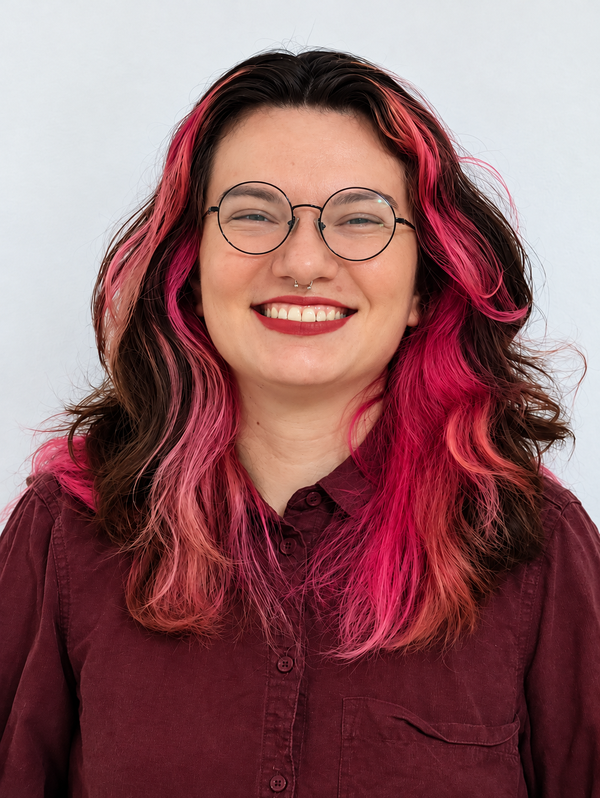
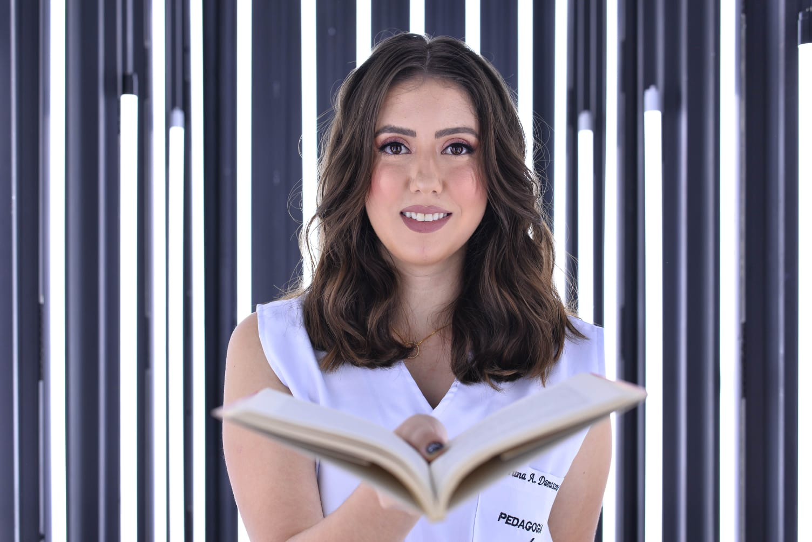
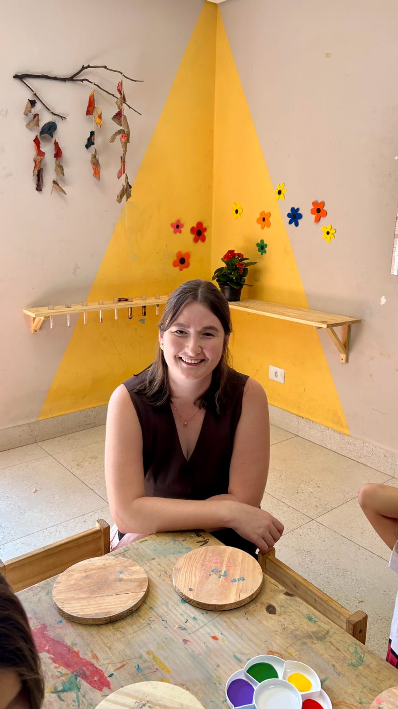

Potencialidades que Transformam:
Aprendizagem e Desenvolvimento na Deficiência
Uma jornada de conhecimento completa e flexível. Aviso Importante: Todos os materiais e links de acesso são liberados gradativamente conforme a programação diária. Nossa programação conta com duas transmissões ao vivo especiais (síncronas) e conteúdos assíncronos complementares.
Palestra Magna
"Desafios e possibilidades no cotidiano educacional inclusivo: construindo pontes com o DUA (Desenho Universal para Aprendizagem)"

Profª Mª Luciléia Bechmann Saldanha
Palestrante ConvidadaProfessora Regente na UniCesumar. Educadora Especial (UFSM), especialista em Transtorno do Espectro Autista (Unesp) e Mestra em Educação Especial (UFSCar).
Comemoração do Dia do Psicopedagogo
"Além da dificuldade: caminhos para o desenvolvimento"
💡 Nota de Esclarecimento Profissional: Destacamos que o psicopedagogo não é professor. Enquanto a docência ensina conteúdos curriculares, a Psicopedagogia atua na investigação, prevenção e intervenção clínica e institucional dos processos cognitivos e afetivos da aprendizagem humana.
Evento aberto a toda a comunidade acadêmica, com ênfase especial aos estudantes de Psicopedagogia.

Profª Bruna Aparecida Damasceno
Mestranda em Educação - Publicações em artigos de livros como: Transtorno do Processamento Auditivo: Pensando práticas pedagógicas para a apropriação do sistema alfabético. Outro artigo publicado em livro foi: Reflexões sobre inclusão e acessibilidade no ambiente escolar a partir do Filme Extraordinário.